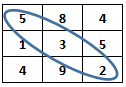

Construye un programa
completo en C libre de warnings y errores, que incluya las siguientes
funciones:
Utilizando la estructura
#define, define las constantes
REN de 3 y COL de 3, que serán
el número renglones y columnas respectivamente que tendrá
la matriz en el programa.
1. El procedimiento
llenaMatriz que recibe como parámetros una matriz de enteros de
REN
por COL. El procedimiento almacenará en la localidad
correspondiente en la matriz un número aleatorio entre -15 y 20
Esto se realizará hasta llenar la matriz.
.
2. El procedimiento
imprimeMatriz,
que recibe como parámetros una matriz de enteros de REN por
COL. El procedimiento desplegará en pantalla
el contenido de la matriz.
3. La función
sumaPositivos,
que recibe como parámetros una matriz de enteros de REN por
COL. La función regresará la suma de todos
los elementos positivos en la matriz.
4. La función
promedioMatriz,
que recibe como parámetros una matriz de enteros de REN
por COL. La función regresará el promedio
de todos los elementos de la matriz.
5. El procedimiento
posParesMatriz, que recibe como parámetros
una matriz de enteros de REN por COL. El procedimiento
desplegará en pantalla el número del renglón y el
número de la columna donde se encuentran los elementos pares en la
matriz.
Por ejemplo,
si la matriz tiene los siguientes valores:
2
1 7
3
6 5
7
4 8
El procedimiento
desplegará en pantalla:
El valor 2 esta
en la posicion 0,0
El valor
6 esta en la posicion 1,1
El valor
4 esta en la posicion 2,1
El valor
8 esta en la posicion 2,2
6. La función
mayorMatriz, que recibe como parámetro
una matriz de valores enteros de REN por COL.
El función regresará el mayor elemento contenido en la
matriz.
7. La función sumaDiagonal
que suma todos los elementos que se encuentran
en la diagonal de la matriz.
Suponiendo
la siguiente matriz:

sumaDiagonal
debería dar como resultado: 10
8. El procedimiento
menu que despliegue el siguiente
menú en pantalla: suma todos los elementos que se encuentran
en la diagonal de la matriz.
1. Llenar matriz
2. Imprimir matriz
3. Sumar positivos
4. Promedio matriz
5.
Posiciones
de valores pares en matriz
6. Mayor matriz
7. Suma diagonal
8. Salir
Pulse la opción deseada:
Escribe el código
necesario dentro del main
para desplegar el menu y brindarle al
usuario la oportunidad de ejecutar cualquiera de las
funciones o procedimientos que han sido construidos.
Utilizando
el ciclo do-while cicle el programa hasta que el usuario seleccione
opción de Salir (8)
Guarda el archivo con el nombre:
T_Matrícula.c